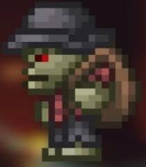

o las fases de luna
El Mercader esquelético es un NPC que se encuentra aleatoriamente en las cuevas subterráneas o también llamado el subsuelo, sin embargo este no va a vivir a tu casa. Suele vender artículos similares al Mercader común. Al encontrar este NPC se detiene la generación de enemigos y si hay monstruos cercanos este arrojará huesos para defenderse de ellos.
Desde la ultima gran actualización, Journey's End, ya es detectado por el Analizador de formas de vida y sus variantes, en la versión para pc muestra su nombre, por ejemplo Tom.
El mercader esqueletico |
|
 |
|
Estadisticas |
|
Tipo |
NPC |
Salud |
250 |
Arma |
Hueso |
Defensa |
15 |
Especialidad |
Vender objetos aleatorios |
Bestiario |
|
Descripcion |
La mayoría de los esqueletos están en busca de sangre, pero no el Mercader Esquelético. Él solo quiere vender suministros, como antorchas raras y equipamiento de yo-yos.
|
Bioma preferido |
El subsuelo |
IDs internas |
|
ID de NPC |
453 |
| Objeto | Precio | Disponibilidad |
|---|---|---|
| Brebaje extraño | 5 |
Durante las fase de luna |
| Poción curativa menor | 3 |
Durante las fase de luna |
| Varita luminosa espeleólogo | 1 |
Durante la noche o Luna llena |
| Barrita luminosa | 10 |
Durante el dia o las fases de luna |
| Antorcha de huesos | 1 |
Cuando empieza la noche y termina el día |
| Antorcha | 50 |
Cuando empieza el dia y termina la noche |
| Flecha de hueso | 15 |
Durante las fase de luna |
| Flecha de madera | 5 |
Durante las fase de luna |
| Bomba | 3 |
Siempre disponible |
| Cuerda | 10 |
Siempre disponible |
| Contrapeso azul | 5 |
Durante las fase de luna |
| Contrapeso rojo | 5 |
Durante las fase de luna |
| Contrapeso morado | 5 |
Durante las fase de luna |
| Contrapeso verde | 5 |
Durante las fase de luna |
| Gradiente | 20 |
Modo difícil durante las fase de luna |
| Format:C | 20 |
Modo difícil durante las fase de luna |
| Guante yoyó | 50 |
Modo difícil |
| Mano de abofetear | 25 |
Modo difícil en Luna de Sangre |
| Linterna mágica | 10 |
Durante la noche de Luna llena |